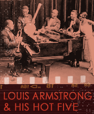

Blues start to appear on jazz recordings by New Orleans musicians during the early 1920s. These New Orleans musicians seem to have been exposed to the blues more through the published blues of composer W.C Handy and ragtime blues sheet music than any other source. Some New Orleans jazz musicians had heard rural blues singers, but there was a sharp class divide between African American musicians working in cities like New Orleans and those working in the countryside or performing in a country style. For example, most pianists working in New Orleans bars and brothels were classically trained and the blues was simply not part of that European art music repertory.
New Orleans jazz musicians performing in what would be called the dixieland style--which featured group improvisation in a dense, polyphonic weave (and we will discuss this more completely in the dixieland section of the course)--were soon adapting 12 bar blues in either slow or fast tempo and substituting altered chords drawn from the published blues tradition.
As New Orleans-style dixieland moved northward to Chicago and New York, it brought along blues numbers as well as many others based on more traditional popular or folk songs. King Oliver, leader of the premiere dixieland ensemble the Creole Jazz Band which also included the young Louis Armstrong on second cornet, recorded their classic “Dippermouth Blues” in Richmond, Indiana near Chicago in 1923.
Follow along with the "Dippermouth Blues" listening guide below. Each chorus will be twelve bars long and is in 12 bar blues form. The performance is easier to follow if you pick up the beat and count it in two beats to the bar (cut time), rather than a fast four beats to the bar. The recording opens with an Introduction that is only 4 bars long and closes with a 2 bar Tag ending.
 Listen and follow along
below to King Oliver's Creole Jazz Band’s “Dippermouth
Blues” (1923).
Listen and follow along
below to King Oliver's Creole Jazz Band’s “Dippermouth
Blues” (1923).
Form of "Dippermouth Blues"
Introduction ensemble (0:00-0:06)
4 mm
1st chorus ensemble (0:06-0:22)
12 bar blues
2nd chorus ensemble (0:22-0:36)
12 bar blues
3rd chorus clarinet solo (0:37-0:53)
12 bar blues
4th chorus clarinet solo (0:53-1:10)
12 bar blues
5th chorus ensemble (1:10-1:26)
12 bar blues
6th chorus cornet solo (King Oliver) (1:26-42)
12 bar blues
7th chorus cornet solo (1:42-1:58)
12 bar blues
8th chorus cornet solo (1:58-2:14)
12 bar blues
9th chorus ensemble (2:14-2:29)
12 bar blues
Tag ending ensemble (2:29-out)
2 mm
As we move from the edge of dixieland toward the next popular jazz
style called
swing, we find another wonderful 12 bar blues recording in "West End
Blues" by the now trumpet soloist and bandleader Louis
Armstrong. Like "Dippermouth
Blues," we will discuss "West End Blues" in more detail
later in the course. For now, listen to the choruses of 12 bar blues
as they
are animated in turn by various soloists in Armstrong's band,
including
the third chorus where Armstrong--singing rather than playing his
trumpet--trades
off every two beats with his clarinet player.
The tempo is in a slow four beats to the bar. The Introduction and the final two measures are basically out of time and are played free. Start counting the beat with the opening of the first chorus.
Listen and follow along below to Louis Armstrong and His Hot Five's "West End Blues" (1928).
Form of "West End Blues"
Introduction trumpet solo (Louis Armstrong)
(0:00-0:16)
free
1st chorus trumpet solo (0:16-0:50)
12 bar blues
2nd chorus trombone solo (0:51-1:25)
12 bar blues
3rd chorus vocal solo (Louis Armstrong) and clarinet
(1:25-1:59)
12 bar blues
4th chorus piano solo (2:00-2:33)
12 bar blues
5th chorus trumpet solo (2:33-2:56)
12 bar blues
Ending piano trumpet (free Tag) (2:56-end)
4 mm 2 mm

Another example of vocal 12 bar blues can be found in the beautiful
recording
of "Fine and Mellow" by the great
jazz singer Billie Holiday.
Watch Billie Holiday and saxophonist Lester Young’s "Fine and Mellow."
Finally, one example of a more contemporary jazz performance of 12 bar
blues.
Soprano saxophonist John Coltrane recorded "Blues to Bechet" in
1970. The tempo is a moderate four beats to the bar. While Coltrane
starts
to move further afield, especially in the fourth chorus and beyond,
his group
still stays grounded by outlining a 12 bar blues progression.
Listen and follow along below to the John Coltrane Quartet’s "Blues to Bechet."
 Form of "Blues to Bechet"
Form of "Blues to Bechet"
1st chorus melody (head) (0:00-0:31)
12 bar blues
2nd chorus soprano sax solo (0:32-1:04)
12 bar blues
3rd chorus soprano sax solo (1:04-1:32)
12 bar blues
*4th chorus soprano sax solo (1:32-2:03)
12 bar blues
5th chorus soprano sax solo (2:04-2:35)
12 bar blues
6th chorus soprano sax solo (2:35-3:05)
12 bar blues
7th chorus soprano sax solo (3:05-3:35)
12 bar blues
8th chorus return of head (3:35-4:05)
12 bar blues
9th chorus soprano sax solo (4:05-4:35)
12 bar blues
10th chorus soprano sax solo (4:36-5:05)
12 bar blues
11th chorus soprano sax solo (5:06-end)
12 bar blues
We will discuss the blues in more detail as we encounter particular
examples
along the way in the course. For now, you should be able to follow a
12 bar
blues progression in a variety of jazz styles.
Please click now on EXAMS on the course homepage or in the navigation bar to the left of the screen and take EXAM 1.